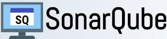
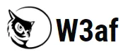
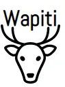

1. Netsparker
Netsparker is one of the best and most accurate tools used in the market for the web.
Application security. It used bulletproof scanning to automatically check for false positives. It is used to find vulnerabilities such as SQL injection and cross-site scripting in web applications.
Netsparker is a paid tool.
2. SonarQube
SonarQube is an open source software testing tool used to measure code quality along with searching for vulnerabilities. It also highlights serious memory problems in the code. SonarQube is written in Java, but can analyze more than 20 languages.
SonarQube is capable of finding vulnerabilities such as Cross-Site Scripting, SQL injection, memory problems, HTTP response splitting, etc. It is capable of finding difficult defects like null pointer exceptions, logic errors, etc. SonarQube can be easily integrated with any CI/CD application.
SonaQube is a paid tool.

3. W3af
W3af is one of the popular and open source web security application tools available in the market. It is written in Python and covers over 200 security issues. It covers topics like Blind SQL injection, buffer overflow, cross-site scripting, CSRF, etc.

4. OWASP ZAP
ZAP is an open source web security scanner. It is intended to be used as a security application and as a professional penetration testing tool. ZAP provides automatic scanners as well as a set of
tools to manually find vulnerabilities in security.
It is developed by the Open Web Application Security Project (OWASP) which is dedicated to finding and fighting vulnerabilities in software. The OWASP Foundation is a nonprofit organization that provides the infrastructure and supports this work.
5.Burp Suite
Burp Suite is a web penetration testing framework written in Java. It has various editions like Community Edition, Professional and Enterprise Edition. Although the community edition is free, the Professional and Enterprise editions are charged after the trial period. The paid version has many advanced tools like spider, repeater, decoder, etc. while the free version only provides basic services.
6. Wapiti
Wapiti is an efficient open source tool available to test the security of a
request. It provides only a command line interface and no GUI, which makes it a bit difficult for beginners to work with. One must have a complete knowledge of the commands before working on Wapiti. It is different from other tools in the market as it helps in black box testing of an application.

7.SQLMap
SQLMap is open source software used to find SQL injection vulnerability. It's
automates the entire process of detection and exploitation of SQL injection in the database of
Any app. Supports a wide range of databases like Microsoft SQL Server, Microsoft Access, SQLite, MySQL, Oracle, etc. Supports downloading and uploading of any file from the database server.